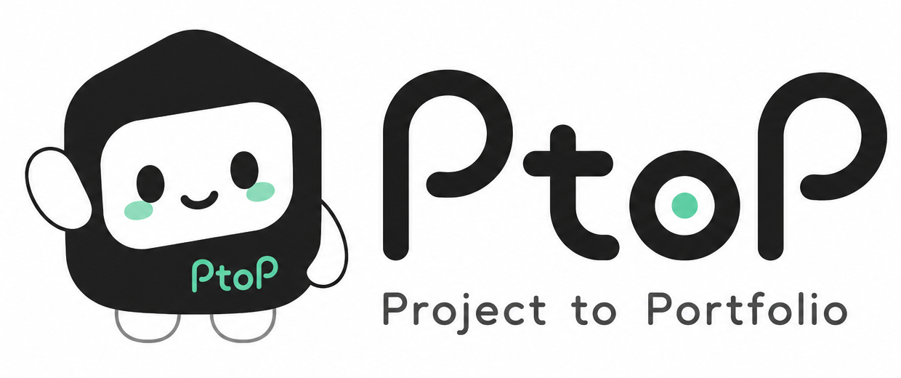

문제 정의
대학생들은 동아리, 해커톤, 부트캠프, 개인 프로젝트를 통해 많은 결과물을 만듭니다. 하지만 프로젝트가 끝나고 시간이 지나면 내가 맡은 역할, 핵심 구현, 기술적 고민, 문제 해결 과정이 흐려집니다.

분석하고 싶은 프로젝트의 Git Repository 주소를 입력해보세요.
대학생들은 동아리, 해커톤, 부트캠프, 개인 프로젝트를 통해 많은 결과물을 만듭니다. 하지만 프로젝트가 끝나고 시간이 지나면 내가 맡은 역할, 핵심 구현, 기술적 고민, 문제 해결 과정이 흐려집니다.
사용자가 GitHub Repository를 입력하면 PtoP가 참여자, 기여도, 최근 커밋 흐름을 정리합니다. 사용자는 이 결과를 바탕으로 프로젝트 경험을 다시 복기할 수 있습니다.
PtoP(Project to Portfolio)는 GitHub Repository를 분석해 대학생 개발자의 프로젝트 경험을 포트폴리오와 회고 형태로 정리해주는 AI Agent 서비스.